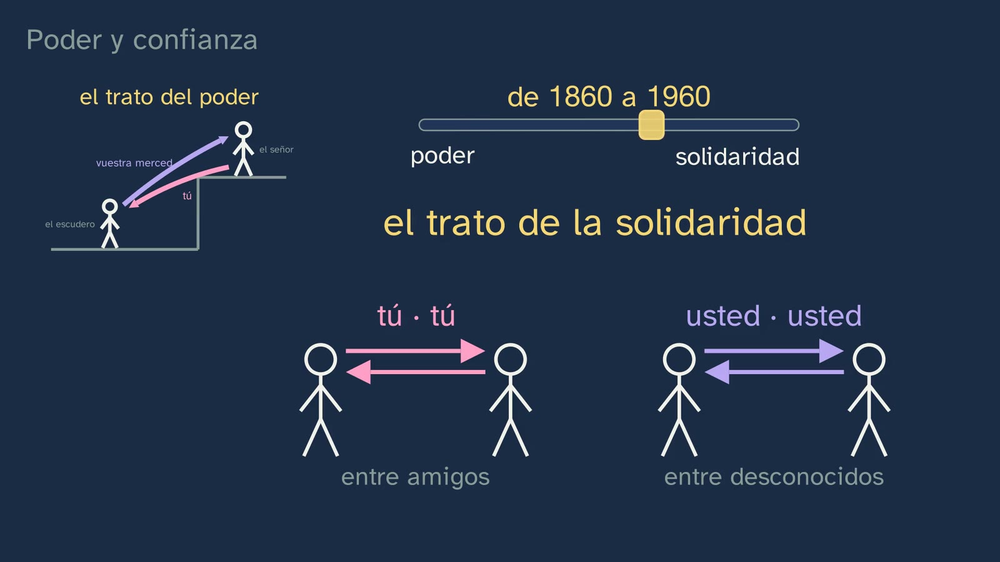
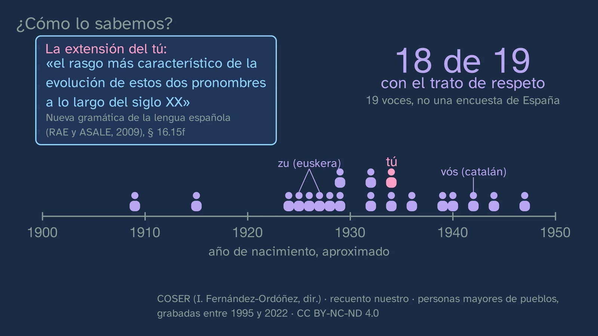
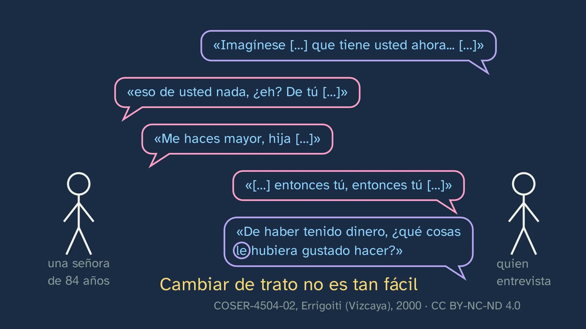
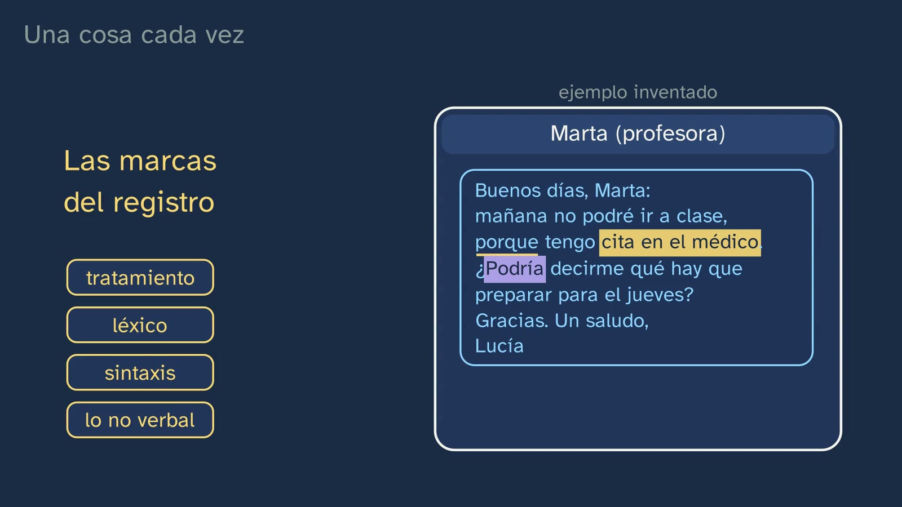

Tú, usted and register
In a nutshell
The class starts from something every student has done: they can't go to class tomorrow and they write two messages, one to their group of friends («Chicos, mañana no voy, tengo médico. ¿Qué hay para el jueves?», "Guys, not going tomorrow, got the doctor's. What's due Thursday?") and another to their teacher («Buenos días, Marta: mañana no podré ir a clase, porque tengo cita en el médico. ¿Podría decirme qué hay que preparar para el jueves? Gracias. Un saludo, Lucía», "Good morning, Marta: I won't be able to come to class tomorrow, because I have a doctor's appointment. Could you tell me what we need to prepare for Thursday? Thank you. Kind regards, Lucía"). Both are fine. Swapped round, both fall flat. So what is speaking well? The answer has a name, appropriateness (in Spanish, adecuación): speaking correctly is necessary, but not enough; you have to get the situation right. The route, in five stages:
- Tú or usted, the most noticeable marker. Why we say «usted tiene» and not «usted tienes» ("you have", with the formal usted): usted comes from vuestra merced ("your grace"), a noun phrase whose head, merced, is a noun, like majestad in «su majestad está cansada» ("Your Majesty is tired") (DPD, «usted», § 2; NGLE § 16.1b). With Don Quixote, from 1605 («Mire vuestra merced…» / «Has de saber, amigo Sancho Panza…», "Your grace should take care…" / "You must know, friend Sancho Panza…"), the word that wears down until it becomes usted (around 1620 and 1690) and the vos that had worn out before.
- Power and solidarity. Address that goes one way only and address that is the same both ways (Brown and Gilman, 1960). How it has changed in Spain, with the Academies' grammar and with COSER's own speakers: 18 of 19 older people from villages addressed their parents as usted (our count); a man from Constantina tells three generations in one minute; the asymmetry that remains with age (55 of 76 interviews); a woman from Errigoiti who asks for tú and has it taken away again in the next sentence. And which face from class 4 each one looks after.
- Register, in three questions. Field, tenor and mode (Halliday and Hasan, 1985), with the decree's components of the communicative event shared out among them; the mixing desk, which moves one thing at a time, and the register markers: form of address, vocabulary, syntax and the non-verbal. And a real woman from Jaén who changes her form of address with three people in the same conversation.
- What isn't words. In a chat there is no face, and the emoji does part of its job: the same «Vale» ("OK"), with a smile or with an eye-roll (Dresner and Herring, 2010; Yus, 2014); and the 93% myth, taken apart with what its author really measured.
- Formal isn't difficult. The typical mistake, with Juan de Mairena («Lo que pasa en la calle», "What happens in the street"), the 82% who found legal language excessively complicated, «El Congreso aprobó» ("Congress approved") and the right to clear language in the justice system (Organic Law 5/2024, LO 5/2024, art. 9).
What it adds that the textbooks and the videos don't. In the class's review of reference videos (42 YouTube videos, 03/11/2026), nobody explains the third person of usted with «su majestad» ("Your Majesty") (only three small channels break it down, without saying it in one sentence), nobody uses Don Quixote for forms of address, nobody draws power and solidarity and nobody separates field from tenor: in Spanish, the field is taken to be the place, or the topic is said to decide formality, which is the root of "formal = difficult". The most-watched video in Spanish on "speaking well" argues the opposite of this class: that formal language «siempre» ("always") looks better and that your words «indican tu intelecto» ("show your intellect") (Kelvin Siso, 2.75 million views, 5:12 and 6:45). Only one video, in English, takes the 93% apart properly. In our comparison with sixteen first-year Bachillerato textbook series (29 and 30/09/2026, for comparison only), none uses the Spanish Royal Academy's corpora or goes through the whole cycle of competence 9, and in some the Mehrabian myth circulates. This class teaches the why of usted with its sources, the change between generations with real testimonies from an open corpus, and says with each figure what is a measurement, what is our own count and what is a clue.
Objective. By the end, students will be able to describe the situation of a text (formality, public or private nature, distance, purpose, channel and non-verbal elements), recognise the markers of its register and explain why formal is not the same as convoluted.
For readers outside Spain: the Bachillerato is the last two years of secondary school (ages 16–18), and ESO is the compulsory stage before it (ages 12–16). Spanish Language and Literature I is a core subject, taken by every student in the first year. The video is in Spanish, with English subtitles; the images on this sheet come from the video and keep their Spanish text. In Spain the decimal separator is a comma, and a space goes before the % sign (93 %). Spanish has two ways of saying "you" to one person: tú, informal, and usted, formal, which takes the verb in the third person (usted tiene, like él tiene, "he has"); to address someone as tú is tutear. Vos and vuestra merced are older forms of address, and usté is how many speakers pronounce usted, and how COSER writes it down. Spanish calls face imagen, so the board writes «imagen negativa» and «imagen positiva» for negative and positive face (class 4). The class is about Spanish, so the examples stay in Spanish here, with an English gloss; the real fragments from the COSER and ESLORA corpora are quoted word for word, and the English glosses are ours. Sources written in English (Brown and Gilman, Brown and Levinson, Halliday and Hasan, Dresner and Herring, Yus, Mehrabian, Oppenheimer…) are quoted in their original words; the decree, in our translation; and the other Spanish sources (the Academies' grammar and dictionaries, Don Quixote, Machado, the 2011 report, the 2024 law…), in Spanish, with our translation in brackets. The RAE is the Spanish Royal Academy, and ASALE the Association of Academies of the Spanish Language: together they publish the Nueva gramática de la lengua española (NGLE, the New Grammar of the Spanish Language), the Diccionario panhispánico de dudas (DPD, the Pan-Hispanic Dictionary of Doubts) and the dictionary, the DLE. The BOE is Spain's Official State Gazette, where every law and decree is published. Constantina is a village in the province of Seville; Errigoiti, in Biscay, in the Basque Country, where Basque (euskera) is spoken alongside Spanish; Los Pascuales, in the province of Jaén, in Andalusia; Almázcara, in the province of León; and Galicia, where ESLORA was recorded, is in the north-west.
Curriculum
Spain's Royal Decree 243/2022, Spanish Language and Literature I, a core subject in the first year of Bachillerato (consolidated text in the BOE, checked for the topic on 29 and 30/09/2026 and for this class on 03/11/2026: its latest update, of 02/07/2026, only touches article 23.4, not the Language annex). Our translation of the official Spanish text.
| Element | What the decree says | Where the class works on it |
|---|---|---|
| Core knowledge (block B, "Communication", 1. Context) | "Components of the communicative event: degree of formality of the situation and its public or private nature; social distance between the interlocutors; communicative purposes and interpretation of intentions; channel of communication and non-verbal elements of communication." | All six, shared out between tenor and mode (9:39). Formality and distance, in the hook (1:59) and in the mixing desk (10:11); the channel and the non-verbal, in mode (11:06) and in "What isn't words" (12:22), with the emoji as the non-verbal of chat (12:52). Public or private and purpose are only named (9:54 and 10:05): exercise 1, the public-address announcement, puts them to work. Interpretation of intentions, in the swapped messages («suena a broma, o a enfado», "it sounds like a joke, or like you're cross", 2:39) |
| Core knowledge (block B, 2. Discourse genres) | "Textual properties: coherence, cohesion and appropriateness." | Appropriateness, by name, is the answer to the class's question (16:07). Coherence, in class 6; cohesion, in topic 7 |
| Core knowledge (block B, 4. Recognition and discursive use of linguistic elements) | "Linguistic resources for adapting register to the communicative situation." | The register markers (10:32–11:06): form of address, vocabulary, syntax and the non-verbal; the rewriting in exercise 2 and the choice of tú or usted in exercise 3 |
| Core knowledge (block D, "Reflection on language") | "Drawing one's own conclusions about how the linguistic system works, with a specific metalanguage, from the observation, comparison and classification of communicative units and from the contrast between languages […]" | The why of the agreement of usted (3:29–4:48), with grammatical person as against the person of discourse; conclusions drawn from a corpus, with what cannot be concluded (6:02–8:00). And this sheet's activity |
| Specific competence 3 | "To produce oral and multimodal texts, with preferential attention to academic texts, with rigour, fluency, coherence, cohesion and the appropriate register, following the conventions of the different discourse genres, and to take part in oral interactions with a cooperative and respectful attitude, both to build knowledge and establish personal bonds and to intervene actively and in an informed way in different social contexts." | Its description asks that in Bachillerato "special attention will be paid to situations of a public nature, with greater social distance between the interlocutors, which call for more elaborate linguistic uses, formal registers and conscious control of everything to do with non-verbal communication". In the video, only as analysis: the message said out loud in the corridor (11:06), the non-verbal (12:22–13:56) and the public-address announcement in exercise 1, the most public and distant situation in the class |
| Specific competence 5 | "To produce coherent, cohesive, appropriate and correct written and multimodal texts, with special attention to the discourse genres of the academic sphere, in order to build knowledge and respond in an informed, effective and creative way to specific communicative demands." | "Appropriate and correct", both: that is why the class says that speaking correctly is necessary, but not enough (16:00). Its description asks for "maintaining appropriate expository clarity": formal isn't difficult (14:00–15:50) and exercise 2 |
| Specific competence 9 | "To consolidate and deepen explicit and systematic knowledge of the structure of the language and its uses, and to reflect autonomously on linguistic and discursive choices, with the appropriate terminology, in order to develop linguistic awareness, to increase the communicative repertoire and to improve skills both in oral and written production and in comprehension and critical interpretation." | Its description asks for work "through processes of inquiry", with "the formulation of hypotheses and rules, the use of counterexamples". Here, the terminology (field, tenor, mode, register, appropriateness, grammatical person), the predictions before the data (6:19 and 10:25) and the activity |
| Criterion 5.1 | "To produce coherent, cohesive academic texts with the appropriate register on curricular topics or topics of social and cultural interest, preceded by a planning process that takes into account the communicative situation, addressee, purpose and channel, and by drafting and revising drafts individually or among peers, or by means of other reference tools." | The mixing desk is that planning, done in full view: the same message for another addressee (10:11), through another channel (11:06) or on another topic (11:30). Exercise 2 is the revision of a draft. Writing a whole academic text, in class 7 |
| Criterion 9.2 | "To explain and argue the interrelation between the communicative purpose and the linguistic choices of the sender, as well as their effects on the receiver, using explicit knowledge of the language and a specific metalanguage." | The whole class: the effect of each message in the wrong place (2:35), usted as a joke and the tú nobody has offered (8:21), which face each form of address looks after (8:04) and exercise 3 |
| Criterion 9.3 (only in the activity) | "To prepare and present the results of small research projects on relevant aspects of how language works, formulating hypotheses and establishing generalisations, using the appropriate linguistic concepts and terminology and consulting dictionaries, handbooks and grammars autonomously." | The video does not state it. This sheet's activity works on it: hypothesis, data from COSER or from the family, count and what cannot be concluded |
What students bring. From class 3, the usted in ESLORA's interviews (the interviewers asked older people «cuénteme» and young people «cuéntame», "tell me" with usted and with tú), Brown and Levinson's three weights (distance, power and what is asked for) and its promise: «del tú y el usted hablaremos en su propia clase» ("we'll talk about tú and usted in a class of their own"). From class 4, the two faces: negative, not being imposed on, and positive, being appreciated; and that overdoing it also communicates. From lower secondary (ESO), the same core knowledge: in years 1 and 2, and again in years 3 and 4, the "Components of the communicative event", the "Textual properties: coherence, cohesion and appropriateness" and the "Linguistic resources for adapting register to the communicative situation"; and in years 3 and 4, the "Identification and use of the variations of deictic forms (formulas of familiarity and politeness) in relation to communicative situations" (Royal Decree 217/2022, Spanish Language and Literature, block B). And, from grammar, the three persons of the verb.
Where it comes back. Class 6, "Where is the meaning of a text?", deals with coherence, the other property in core knowledge B.2. Class 7, the topic's second lab, asks students to write a text with its reader in mind: the whole of criterion 5.1. Voseo and the ustedes of the Canary Islands, western Andalusia and the Americas, which this class leaves out, go in topic 20 of the plan, «El español y sus hablantes: variedades y prejuicios» ("Spanish and its speakers: varieties and prejudices"; the class «El español de aquí y de allí», "The Spanish of here and there").
How the class is built
Video chapters
About eighteen minutes, in eleven chapters. It is a theory class, with Vera, without a lab coat, at her desk, but its data are real: four COSER interviews (villages in the provinces of Seville, Biscay, Jaén and León) and two fragments from ESLORA (Galicia), of which only the text is shown; no voice is played. The messages in the hook and in the mixing desk are invented, and the board says so. The colours follow class 4's: lavender for usted, pink for tú; the dashed bubble (negative face) and the thermometer (positive face) come back with the same meaning.
| Chapter (minute) | What it does | Learning principle |
|---|---|---|
| What we'll see (0:00) | Vera says hello; the map of the topic, with the fourth class for a moment and then the fifth highlighted (0:07) | Knowing where you are (multimedia learning: signalling) |
| What you already know (0:17) | In class 3's interviews, who did they use usted with? (0:28; a short silence, no countdown). A dot for each «cuéntame», lavender for those in usted: 0 of 26 among the young, 8 of 15 and 17 of 24 (0:32), and that class's promise | Retrieval (Roediger and Karpicke, 2006), with the question in view |
| The solutions (0:54) | Class 4's three exercises, each with its question in grey: which face each sentence threatens (0:54), «cierra la ventana» ("close the window") along the five paths (1:20) and the plan you can't go to (1:39) | Spacing; the solutions, short and with their questions |
| The question (1:59) | The hook: the two messages, typed on two phones. Both are fine (2:30); swapped round, they fall flat (2:35). Vera, to camera (2:53): «Entonces, si los dos estaban bien, ¿qué es hablar bien?» ("So, if both were fine, what is speaking well?"), and the question, alone and large (2:57) | The hook, with its context |
| Tú or usted (2:57) | «¿Podría decirme…?» against «¿Podrías…?» ("Could you tell me…?", with usted and with tú), and tú in classrooms in Spain and in the Americas (3:11). Stop and think: «usted tiene», not «usted tienes» (3:29; countdown at 3:48). Don Quixote, with Doré's engraving (3:53); vuestra merced is a noun, like majestad (4:11), and the word that wears down letter by letter in its place, over a line that marks 1605 (Don Quixote), around 1620 and around 1690 (4:27). The vos that had worn out before (4:51) | The problem before the explanation; how do we know?, with the 1605 text |
| Power and solidarity (5:12) | The two figures at two heights: the power semantic (5:12) and the solidarity semantic, with the slider from 1860 to 1960 (5:38). Prediction (6:19; countdown at 6:22) and COSER's nineteen voices (6:27), with the Academies' grammar; the man from Constantina and his three-generation tree (6:48); the grid of 76 interviews (7:11); Errigoiti (7:35). Which face each one looks after (8:04) and how both go wrong (8:21). Vera, at the midpoint (8:43) | Predicting before seeing (White and Gunstone, 1992); how do we know?, with corpus data and their limit stated |
| Register in three questions (8:50) | Field, tenor and mode, and what register is (9:18–9:39); its pieces, with the decree's components (9:39). The mixing desk: tenor, with a prediction (10:11; countdown at 10:27) and the register markers (10:32); mode (11:06); field (11:30). A woman from Jaén, three registers in the same conversation (11:47) | First the intuition, then the exact version; one change at a time (segmenting) |
| What isn't words (12:22) | In a chat there is no voice or face: the same «Vale» ("OK"), with a smile or with an eye-roll (countdown at 12:34); in person the face would say it, and in a chat the emoji says it: how the message should be taken (12:47–12:56); the 93% myth (13:07), with the pie chart that cracks (13:47) | Comparing side by side (in a chat and in person); how do we know?; the myth, taken apart with the original source |
| Formal isn't difficult (14:00) | The typical mistake, crossed out; Mairena on the board, with a countdown (14:28) and his solution (14:33); the 82% and «El Congreso aprobó» ("Congress approved") (14:53); the 2024 law (15:18); what formal is, and that colloquial isn't incorrect (15:31) | The mistake, in view, taken apart by reasoning (Muller et al., 2008) |
| What is speaking well? (15:54) | The answer to the question: it isn't speaking in a difficult way, or always the same way; correctness and appropriateness (15:54). The two messages from the hook cross over again and fall flat: the same field, a different tenor. The summary, with a warning that it is a repetition (16:17) | Closing the hook; spacing |
| Practice and keep thinking (16:50) | The three exercises (16:50); the open question, with two real voices (17:34; countdown at 18:03); the next class (18:08); goodbye (18:13) | Retrieval; the open question (article 9 of the channel's Constitution) |


A plan for a 50-minute lesson
| Minutes | What to do |
|---|---|
| 0–4 | No video. "Before you start" on the worksheet: tú or usted with six people? By a show of hands, how many would use usted with the man of seventy and how many with the Language teacher: write it on the board, without comment. |
| 4–8 | Video from 0:00 to 2:58. At 0:28 the video's silence is enough. At 2:58, with the question large on screen, pause: each student writes in one line what speaking well is (question 2 on the worksheet) and keeps it for the end. |
| 8–13 | Video from 2:58 to 6:27. At 3:45 the video's countdown is enough (question 3). Pause at 6:22: by a show of hands, how many of the nineteen people do you think addressed their parents as usted? (question 5). Carry on. |
| 13–17 | Video from 6:27 to 8:50. After Vera's shot, one minute for questions 6 and 7 on the worksheet. |
| 17–23 | Video from 8:50 to 12:22. Pause at 10:26: in pairs, two things that change in the message if it goes to the teacher (question 8). Carry on; afterwards, each pair puts its two changes under one of the four markers. |
| 23–29 | Video from 12:22 to the end (18:26). At 14:28 and at 18:03 the countdown is enough. The exercises, for homework: their solutions open class 6. |
| 29–44 | The activity: usted to one's parents, in the data (below). |
| 44–50 | The open question, as a debate (pointers in "Keep thinking"), and back to the line written at minute 2:58: would anyone change it? And to the table from the start: what weighed most in each choice, age, position or confianza (closeness)? |
Typical mistakes and how they are handled
With an honest warning, as in classes 3 and 4: none of these mistakes has been measured with Spanish Bachillerato students. The first is the one the topic sheet anticipates for this class (its mistake 4); the others circulate in videos with millions of views or are predictable from what the class teaches, and we say where each one comes from.
- "Formal means using difficult words". Language lessons with plenty of views say so: «el registro culto utiliza palabras y oraciones complejas… cuesta comprenderlo y recomiendo que en caso de dudas recurran a un diccionario» ("the educated register uses complex words and sentences… it is hard to understand and I recommend that, if in doubt, you turn to a dictionary") (Profe en c@sa, 190 thousand views, 2:18–2:48), and BBC Learning English rewrites a formal email by putting in Latinate words and complex structures (1:28 and 2:50). The evidence against comes from the real world: according to the barometers of the CGPJ (the General Council of the Judiciary, the governing body of Spain's judges), 82% of citizens consider «que el lenguaje jurídico es excesivamente complicado y difícil de entender» ("that legal language is excessively complicated and difficult to understand") (Informe de la Comisión de modernización del lenguaje jurídico, Report of the Commission for the Modernisation of Legal Language, 2011, p. 2), and the same report asks for short sentences, because legal texts «se prolongan de forma innecesaria mediante el empleo de incisos y perífrasis, de expresiones redundantes, de locuciones que nada aportan» ("are drawn out unnecessarily through the use of asides and periphrases, of redundant expressions, of phrases that add nothing") (p. 8). The class raises it at 14:00 and takes it apart with Mairena (14:33), «El Congreso aprobó» ("Congress approved") (15:09) and LO 5/2024 (15:18), which asks for clear language «sin perjuicio de la necesidad de utilizar el lenguaje técnico-jurídico para garantizar la precisión» ("without prejudice to the need to use technical legal language to guarantee precision") (art. 9.2): the necessary technical term is not convoluted. Watch out for the opposite mistake, "never use long words" (Derek Halpern: "stop using them now", 2:15): what is superfluous is complication without need.
- "Colloquial is incorrect", or "speaking well is speaking formally". Much-watched videos say so: «utilizar un lenguaje coloquial o vulgar no es… nada elegante» ("using colloquial or vulgar language is not… at all elegant") (Teresa Baró, 3.19 million, 1:04), and others confuse register with the speaker's level of education (Aprueba con Nota Alta, 2:35). The Centro Virtual Cervantes points out that registers «no constituyen entidades discretas, con fronteras claras, sino que se dan en un continuum» ("are not discrete entities, with clear boundaries, but occur along a continuum") («Registro», "Register", Diccionario de términos clave de ELE, its dictionary of key terms in Spanish as a foreign language), and the decree asks students to tell registers apart from dialects and sociolects "in order to combat linguistic prejudices and stereotypes with reasoned arguments" (introduction to the subject). The class says it at 15:45: «lo coloquial no es incorrecto: es lo adecuado entre amigos» ("colloquial isn't incorrect: it's what's appropriate between friends"). And the mistake in reverse: if everything depends on the situation, correctness doesn't matter. No: competence 5 asks for texts that are "appropriate and correct", and the class says so before naming appropriateness (16:00). In COSER there are speakers who say of themselves that they speak «muy malamente» or «mu basto» ("really badly", "really rough") (La Atalaya, Málaga, COSER-3002-02, p. 26; Liétor, Albacete, COSER-0214-01, p. 34): if they are brought into the classroom, let it be to discuss that belief, not to take it as true.
- "Usted isn't used any more", or, the other way round, "using tú is always rude". Both are false as descriptions. The Academies' grammar says that «el trato de usted dirigido a los desconocidos adultos sigue siendo, con escasas excepciones, la norma común en el español general contemporáneo» ("usted addressed to adult strangers is still, with few exceptions, the common norm in general contemporary Spanish") (NGLE, § 16.15h), and also that tú is today the normal form between relatives, classmates and colleagues, and «entre jóvenes, incluso si no se conocen» ("among young people, even if they don't know each other") (§ 16.15i), and that it can be offensive with «un profesor que no haya dado su beneplácito» ("a teacher who has not given their consent") (§ 16.15j). The class shows it at 3:11 (tú in classrooms) and at 8:21 (both can go wrong). What has no textbook answer is whether respect lies in the form of address: that is the open question (17:34), and the teacher does not close it.
- "Usted is third person because it talks about someone else". The other way round: it talks about the person in front of you. The DPD puts it like this: «Aunque su referente es siempre una segunda persona, pues designa al interlocutor a quien se habla, gramaticalmente es un pronombre de tercera, pues procede, etimológicamente, de la contracción del sintagma nominal vuestra merced» ("Although its referent is always a second person, since it designates the interlocutor being addressed, grammatically it is a third-person pronoun, since it comes, etymologically, from the contraction of the noun phrase vuestra merced") («usted», § 2). It is the difference between the person of discourse and grammatical person. The class draws it at 3:29, with an arrow from «usted» to the person in front and another, the verb's, to the third person, and resolves it at 4:11. The NGLE's example for the classroom: «Señor, ¿quiere vuestra merced darme licencia que departa un poco con él?» ("Sir, will your grace give me leave to talk with him a little?") (Don Quixote, I, cited in § 16.1h), where él ("him") is the person being addressed.
- "The topic decides how formally you speak", or "the field is the place". On YouTube: «tendremos que ser más [formales] si hablamos de mecánica cuántica que si hablamos… de fútbol» ("we'll have to be more [formal] if we're talking about quantum mechanics than if we're talking… about football") (Quique Castillo, 5:57) and «el campo es dónde podemos encontrar este enunciado» ("the field is where we can find this utterance") (Profe Eber, 1:25). For Halliday and Hasan, the field is "what is happening, to the nature of the social action that is taking place", and the relationship between the participants is the tenor (1985, p. 12). The class separates them in the mixing desk: with the same form of address and the same channel, another topic only brings other words (11:30). You can talk about logarithms with your friends, and about football at a press conference.
- "93% of what we communicate isn't words" (or 55%, "body language"). It comes from two 1967 experiments with single words: in Mehrabian and Ferris, 62 female university students took part in all, and the test that combines voice and face was done by 20 (p. 250); the 7-38-55 rule is a "suggested" sum of the two studies ("It is suggested that the combined effect… is a weighted sum of their independent effects— with the coefficients of .07, .38, and .55", p. 252). Mehrabian himself: "Unless a communicator is talking about their feelings or attitudes, these equations are not applicable" (kaaj.com). There was no body in the experiment: there were photos of faces. The class takes it apart at 13:18 with a common-sense test (if it were true, you would understand almost all of a film in a language you don't know), with what was measured and what wasn't (neither conversation nor ideas to understand) and with that clarification from the author on screen, translated. In the topic's textbook comparison it turned up in one book with a different figure, «el 60 % de lo que decimos es lenguaje corporal» ("60% of what we say is body language"): it is the same myth.
- "Emojis are decoration", or "they only express emotions". Many say, above all, how what is said should be taken. For Dresner and Herring (2010), a wink indicates that a message "should not be taken as a request or a demand", and Yus (2014) counts eight functions, among them strengthening or softening what is said and marking a joke or irony: "Emoticons are not redundant or irrelevant". The class says it at 12:52: «el emoji hace parte de su trabajo: dice cómo hay que tomar el mensaje» ("the emoji does part of its job: it says how the message should be taken").
- Two legends that may come up in class: "usted comes from the Arabic ustad" and "the respectful vos was born because there were two emperors". On the first, De Jonge (2005, note 3) points to «la falta de testimonios de la forma usted antes de 1620, más de 100 años después de la reconquista de Granada» ("the lack of attestations of the form usted before 1620, more than 100 years after the reconquest of Granada"), and concludes that its influence, «de haber existido siquiera, fuera mínima, o que quizá la semejanza de las dos formas constituya una coincidencia fortuita» ("if it existed at all, was minimal, or that perhaps the similarity of the two forms is a chance coincidence"). The second is a hypothesis of Brown and Gilman's, which they themselves present with "may have been" (1960, p. 255; see "For teachers"). The class doesn't tell them; if they come up, they are a good example of "how do we know?".
Questions and solutions
Stop and think (in the video)
- In class 3's interviews, who did they use usted with? (0:28; a short silence, no countdown) With older people. In class 3's count, on ESLORA's interviews, no «cuénteme» to young people aged 19 to 34 (0 of 26), 8 of 15 to those aged 35 to 54 (53%) and 17 of 24 to those aged 55 or over (71%). The video answers at 0:32, with the three bars. Careful when reading the bars: class 3 called all those requests «cuéntame» ("tell me"), and what is counted is how many were in usted («cuénteme»).
- So, if both were fine, what is speaking well? (2:56; Vera, to camera, and the question alone on the board until 2:59) It is the class's question, and it is answered at 15:54: «Hablar correcto hace falta, pero no basta: hay que acertar con la situación. A eso se le llama adecuación» ("Speaking correctly is necessary, but not enough: you have to get the situation right. That's called appropriateness"). If an answer is written in class at minute 2:58, it can be compared at the end: it almost always comes out as "speaking without mistakes", "speaking formally" or "speaking with educated words", which are the class's starting point.
- Would you write it like that, or with «podrías»? (3:07; in passing, without a pause) It has no single answer: it depends on the school, on the teacher and on what she has suggested. What the grammar says: in Spain tú «se ha extendido de manera considerable en todos los estadios de la enseñanza, y a menudo aparece solo restringido por ciertas variables, no siempre nítidas, relativas a la edad, al prestigio del profesor o al respeto o la autoridad que este pueda imponer» ("has spread considerably at all stages of education, and often appears restricted only by certain variables, not always clear-cut, relating to age, to the teacher's prestige or to the respect or authority that he or she may command"); in the Americas it is «poco frecuente» ("uncommon") between student and teacher (NGLE, § 16.15i). And it can be offensive with «un profesor que no haya dado su beneplácito» ("a teacher who has not given their consent") (§ 16.15j).
- We say «usted tiene», not «usted tienes». Why? (3:45; the countdown, at 3:48) Because usted comes from vuestra merced, which is a noun phrase: its head, merced, is a noun, and a noun agrees with the verb in the third person, like majestad in «su majestad está cansada» ("Your Majesty is tired") or señoría in «su señoría ha dicho» ("Your Honour has said"). The NGLE: «vuesa merced concuerda en tercera persona con el verbo porque su núcleo es el sustantivo merced, es decir, un nombre común. Lo mismo sucede con otras formas de tratamiento, como su excelencia, su ilustrísima, su señoría, su alteza» ("vuesa merced agrees with the verb in the third person because its head is the noun merced, that is, a common noun. The same happens with other forms of address, such as su excelencia, su ilustrísima, su señoría, su alteza", "Your Excellency, Your Lordship, Your Honour, Your Highness") (§ 16.1b); and the DPD, «usted», § 2. The video answers between 3:53 and 4:48. These also count, as good hypotheses: "because you speak to the other person as if they were someone else, to keep your distance" or "because it comes from a formula like «su majestad»": the first describes the effect, not the grammatical cause, and it is worth steering it towards the noun; the second is almost the answer.
- Out of nineteen older people from villages, born between 1909 and 1947, who tell how they addressed their parents, how many do you think used usted? (6:19; the countdown, at 6:22) Eighteen, with the respectful form: fifteen with usted, two with the Basque zu (Gabiria, Guipúzcoa) and one who says «usted, de vos» (Queixàs, Gerona). Only one, tú: a man from Santaella (Córdoba), who explains that «aquí en Santaella no tenemos esa costumbre» ("here in Santaella we don't have that custom") (COSER-1514-01, p. 8). The video answers at 6:27. What it doesn't say: that 18 out of every 19 Spaniards of that age addressed their parents as usted. They are the people COSER was looking for (older, from villages) and the ones who brought up the subject; what does back it up is the Academies' grammar: usted «era el trato que se daba tradicionalmente en España a los padres y ascendientes próximos de mayor edad a lo largo de los siglos xviii, xix e, incluso, de la primera mitad del xx, sobre todo en los ámbitos rurales» ("was the form of address traditionally used in Spain with parents and close older forebears throughout the 18th and 19th centuries and even the first half of the 20th, above all in rural areas") (NGLE, § 16.15r). What matters is not guessing the number, but having predicted before seeing.
- The same message, on the same phone, but to your teacher. What do you think changes? (10:25; the countdown, at 10:27) The video answers at 10:32. The form of address changes: the vocative and the greeting («Chicos» becomes «Buenos días, Marta», "Guys" becomes "Good morning, Marta") and the person of the verb («¿Podría decirme…?», "Could you tell me…?": usted comes in). The vocabulary changes: «tengo médico» ("got the doctor's"), colloquial, becomes «tengo cita en el médico» ("I have a doctor's appointment"). The syntax changes: «no voy» ("not going") becomes «no podré ir a clase» ("I won't be able to come to class"), and the reason, which in the message to the group was juxtaposed («no voy, tengo médico»), is joined with «porque» ("because") («y se une la causa», "and the reason is joined on", says the voice). Formulas for closing arrive that the group doesn't need: the thank-you and the sign-off («Un saludo, Lucía», "Kind regards, Lucía"). And the chat's non-verbal element goes: the emoji. Any pair of changes that are in the message and are named with their marker counts. The thank-you and the sign-off are formulas of politeness and of the genre (an email or a message to someone with whom there is distance): they can go with form of address, if argued, better than with syntax.
- «Vale», with a smile, and «Vale», with an eye-roll: do they say the same thing? (12:32; the three-second countdown, at 12:34) No. The word is the same, but the smile says you're keen to go, and the eye-roll that you're going without wanting to. In person the face would say it; in a chat there is no face, and the emoji does part of its job: it says how the message should be taken (Dresner and Herring, 2010; Yus, 2014). Any reasoned answer that sees that the little face changes how the «Vale» is taken counts. The video answers at 12:37.
- «Vaya usted poniendo eso en lenguaje poético» ("Now go on and put that into poetic language"). What would you write? (14:26; the countdown, at 14:28) Mairena's student writes «Lo que pasa en la calle» ("What happens in the street"), and Mairena says «No está mal» ("Not bad") (Machado, Juan de Mairena, 1936, ch. I). The video gives it at 14:33. Versions that say the same thing with everyday words count («lo que pasa siempre en la calle», «lo de cada día en la calle»: "what always happens in the street", "the everyday stuff in the street"); those that replace one convoluted word with another («los sucesos habituales de la vía pública», "the habitual incidents of the public highway") are still untranslated. Careful: Mairena asks for "poetic language", not formal language. The class uses it for register («la frase rebuscada no era más poética, ni más formal», "the convoluted sentence was no more poetic, and no more formal", 14:41): that is our reading, with a precedent, Carlos Lesmes's prologue to the Libro de estilo de la Justicia (Style Guide for the Justice System, 2017, p. XXV), which gives the scene as an example of the «ideal de sencillez del magisterio machadiano» ("ideal of simplicity of Machado's teaching"). If a student attempts a truly poetic version (a metaphor, a line of verse), that counts too: it is what the teacher was asking for.
- Is respect in the form of address? What do you think? (17:58; the countdown, at 18:03) No verdict (article 9 of the channel's Constitution). The two positions, with their best argument, and the pointers for the debate, below, in "Keep thinking".




From the student worksheet
- Before you start. There is no solution: it is what each person would do, with a reason. At the end, what the Academies' grammar says about similar cases: usted to «los desconocidos adultos» ("adult strangers") is still «la norma común» ("the common norm") (the man of seventy; NGLE, § 16.15h); tú is the normal form «entre parientes cercanos» ("between close relatives") and «entre jóvenes, incluso si no se conocen» ("among young people, even if they don't know each other") (the grandmother and the twenty-year-old shop assistant; § 16.15i); with teachers, tú has spread in Spain, often «restringido» ("restricted") by «la edad» ("age"), «el prestigio del profesor» ("the teacher's prestige") or «la autoridad que este pueda imponer» ("the authority that he or she may command") (the Language teacher and the head teacher; § 16.15i), and it can be offensive if they haven't offered it (§ 16.15j); tú to «un dependiente o a un camarero adulto al que no se conoce» ("an adult shop assistant or waiter one doesn't know") can also offend (§ 16.15j). The NGLE says nothing about patient to doctor; it does say that in Spain doctors and nurses often use tú with their patients, «en ocasiones como reflejo de cierta actitud paternalista» ("sometimes as a reflection of a certain paternalistic attitude") (§ 16.15i). What cannot be concluded from the class's count: how people address each other in Spain, or even in the neighbourhood. It is a group of one age and one place, it says what it would do and not what it does, and the table made it choose between two (in life, many people avoid choosing: «¿Qué hay que preparar?», "What do we need to prepare?", with neither tú nor usted, like the message said in the corridor, 11:16).
- While you watch the video.
- With older people: 0% from 19 to 34, 53% from 35 to 54 and 71% at 55 or over (0:32).
- Their own, whatever it is. At the end, compared with the class's (15:54): correctness and, as well, appropriateness.
- Because usted comes from vuestra merced, a noun phrase with a noun as its head, merced, which agrees in the third person like majestad in «su majestad está cansada» ("Your Majesty is tired") (NGLE, § 16.1b). The best answers distinguish whom usted refers to (the person in front of you, the second person of discourse) from how it agrees (in the third).
- Power: an arrow of «usted» (or «vuestra merced») going up and one of «tú» going down; it is Sancho and Don Quixote's ("the superior says T and receives V", Brown and Gilman, 1960, p. 255). Solidarity: two equal arrows, tú and tú between friends, usted and usted between strangers (pp. 258–259). Two friends: solidarity, with tú and tú.
- Their number. The answer: 18 of 19 with the respectful form, 1 with tú (6:27). It isn't enough because they are nineteen voices from villages, not a survey of Spain; they agree with the Academies' grammar (NGLE, § 16.15f, which the board quotes, and § 16.15r, which says it of parents).
- The interviewer uses usted with the older person, and the older person uses tú back (7:19). The fieldworker in Errigoiti accepts tú («entonces tú», "tú, then") and in the next sentence goes back to usted («¿qué cosas le hubiera gustado hacer?», "what would you [usted] have liked to do?", 7:54). Any reasoned explanation of why it is hard to change counts; the video's is that changing your form of address isn't that easy.
- Tú looks after positive face, being appreciated («somos de los mismos», "we're on the same side"); usted, negative face, the other person's space (8:08–8:20). A usted that goes wrong: between friends, it sounds like a joke («¡Ochenta mil, perdone usted!», "Eighty thousand, I beg your pardon!", 8:33). A tú that goes wrong: to someone who hasn't offered it, it sounds like a familiarity nobody has given you (8:37). That usted looks after negative face and tú positive face is the application of Brown and Levinson made by Blas Arroyo (1994, pp. 40–41).
- Field, what's it about? (the topic and what is being done); tenor, who's talking to whom? (the relationship); mode, by what means and what for? (9:18–9:31). Distance, formality and public or private, in tenor; the channel, the non-verbal and purpose, in mode (9:45–10:08). That sharing out of the decree's components is the class's own, and the board says so: «el reparto, nuestro» ("the sharing out is ours"). After the countdown: the changes and their markers, as in the solution above.
- The emoji: in person, whether you're keen to go or not would be said by your face; in a chat there's no face, and the emoji does part of its job: it says how the message should be taken (12:52). The 93%: two 1967 experiments with single words and photos of faces, in which participants judged whether the speaker liked another person or not; according to its author, it only applies to feelings of liking or disliking (13:45).
- Their version, and Machado's: «Lo que pasa en la calle» ("What happens in the street") (14:33). It isn't less formal: it is just as neutral, only clearer. Good answers say that the convoluted sentence added nothing the other one doesn't say.
Practice (the solutions open class 6)
- A public-address announcement at a train station. Describe its situation: what it's about, who with whom, and by what means and what for, with two markers of its register.
- Solution, on an announcement invented for this sheet: «Atención, por favor. El tren con destino a Zaragoza, con salida prevista a las 17:30, saldrá con un retraso aproximado de veinte minutos. Rogamos disculpen las molestias» ("Attention, please. The train to Zaragoza, scheduled to depart at 17:30, will leave with a delay of approximately twenty minutes. We apologise for any inconvenience"). Field: trains (timetables, destinations, tracks), and what is being done: announcing a change. Tenor: the station or the company, with a voice that speaks on behalf of all of it, to travellers it doesn't know; maximum distance, a formal and public situation (the whole platform hears it). Mode: oral, through a loudspeaker and in one direction only: nobody can answer or ask for it to be repeated, and there is no face and there are no gestures; of the non-verbal, the voice, intonation and rhythm remain, and often a jingle before speaking. Purpose: to inform, and sometimes to give an instruction («no rebasen la línea amarilla», "do not cross the yellow line"). Two markers: form of address («Rogamos disculpen», "we ask you to excuse", with usted in the plural, or impersonal formulas: «se ruega», "you are kindly requested"), the field's vocabulary («con destino a», «vía», «andén»: "bound for", "track", "platform"), syntax (complete sentences, with their subject and their complements, because there is no shared context to complete them) and the non-verbal (the jingle, an unhurried voice).
- Other answers that count. That the purpose is to warn or to ask for something, if the announcement they imagine is a safety one. That the tenor is described as "an institution speaking to strangers". That the mode is described as written, if someone thinks of an announcement read from a text: it is written to be spoken, and it counts if argued (as with radio news). Any pair of markers of different kinds, with its reason.
- Criteria. The three questions answered, plus the purpose; the decree's words where they belong (formality, public, distance, channel, non-verbal); and two markers, each with its name (form of address, vocabulary, syntax or the non-verbal) and a reason that ties it to the situation. It mixes this class with the previous one if someone sees that «Rogamos disculpen las molestias» is an apology, which looks after the travellers' negative face (class 4), and with class 2, if they see that the announcement is a speech act that informs and «se ruega», one that requests.
- For teachers. It is the exercise in which the two components of core knowledge B.1 that the video only names (9:54 and 10:05), public and purpose, are put to work. If someone writes «efectuará su salida» ("will effect its departure"), it is a good moment to link with exercise 2: does it say anything that «saldrá» ("will leave") doesn't?
- Keep this sentence formal, but make it clear: «Le comunico que procederé a efectuar la entrega del trabajo en el día de mañana» ("I wish to inform you that I shall proceed to effect the submission of the assignment in the course of tomorrow").
- Model solution (one of several): «Le entregaré el trabajo mañana» ("I'll hand the assignment in to you tomorrow"). What is formal in the sentence is the «le» (the usted), that the sentence is complete and that it has no colloquial word; all three remain in the short version. What has been removed didn't make the sentence more formal, only longer: «Le comunico que» ("I wish to inform you that") announces what the message itself already does; «procederé a» ("I shall proceed to") is a periphrasis that adds nothing to «entregaré» ("I'll hand in"); «efectuar la entrega» ("effect the submission") says with a support verb and a noun what the verb «entregar» ("to hand in") says; and «en el día de mañana» (literally "on the day of tomorrow") says in five words what «mañana» ("tomorrow") says in one. It is what the 2011 report criticises in legal texts: «incisos y perífrasis» ("asides and periphrases"), «expresiones redundantes» ("redundant expressions") and «locuciones que nada aportan» ("phrases that add nothing") (p. 8). And it is Mairena's point: the same thing, without the disguise.
- Other answers that count. «Mañana le entregaré el trabajo» ("Tomorrow I'll hand the assignment in to you"); «Le entrego el trabajo mañana» ("I hand the assignment in to you tomorrow": the present for the future, normal for a fixed arrangement); «Mañana entregaré el trabajo» ("Tomorrow I'll hand in the assignment": without «le», the usted marker is lost, but it doesn't switch to tú; it counts if they say so). «Le escribo para avisarle de que mañana le entregaré el trabajo» ("I'm writing to let you know that I'll hand the assignment in to you tomorrow") counts in an email that needs to open with its reason, if argued. It does not count: «Te lo entrego mañana» ("I'll hand it in to you [tú] tomorrow"): it changes the tenor, and the exercise asks to keep it formal.
- Criteria. The sentence keeps usted and the information (what and when); it removes at least two of the four padding pieces and says why each one is superfluous; and it explains in one sentence why the long one is not more formal (formal isn't difficult: register is marked by distance and form of address, not by length). It mixes with class 4 if someone sees that so much beating about the bush also communicates something, like the pen with three «perdona» ("sorry"): overdoing it shows.
- For teachers. The sentence is invented, but it is made of pieces that are heard and read every day. If someone defends «procederé a efectuar» because it "sounds more professional", that is the typical mistake (formal = difficult), and the answer is the class's: what information does it add? A nuance so as not to go too far: not every periphrasis is superfluous («voy a entregar», "I'm going to hand in", says something that «entregaré» doesn't quite say, the immediate intention); what is superfluous is the one that adds nothing.
- Choose tú or usted, and explain why, with your new neighbour, aged eighty, with your summer-camp leader, aged twenty-two, and in a job interview. And say which face you look after in each case.
- Solution. The neighbour: usted, at least at first. The two things the class calls power and solidarity both weigh: age, which Brown and Gilman count among the bases of power ("physical strength, wealth, age, sex…", 1960, p. 255), and the fact that there is no confianza (closeness) yet (no solidarity); and it is what the grammar gives as the norm with «los desconocidos adultos» ("adult strangers") (NGLE, § 16.15h). Most likely she will use tú with you: asymmetrical address «suele estar condicionado por la edad o por la jerarquía» ("tends to be conditioned by age or by hierarchy") (§ 16.15c), as in 55 of COSER's 76 interviews. You look after her negative face: you don't take a familiarity she hasn't given you. If she offers you tú, like the woman from Errigoiti, accepting it looks after her positive face. The camp leader: tú. Solidarity weighs: there are only a few years between you, it is an informal group situation, and tú is «el trato normal entre jóvenes, incluso si no se conocen» ("the normal form among young people, even if they don't know each other") (§ 16.15i). Even though he is the one in charge, solidarity wins, which is what Brown and Gilman saw winning in the hundred years before their study (p. 259). You look after his positive face: we're in the same group. A usted would sound distant, or like a joke, like the «¡perdone usted!» ("I beg your pardon!") of the ESLORA girls. The interview: usted to begin with. Distance weighs (you don't know each other), as do the formality of the situation and power (the interviewer decides). You look after their negative face, with deference. If the interviewer suggests tú, you accept.
- Other answers that count. Usted with the camp leader on the first day, waiting to see what the others do, if argued. Tú in the interview if the company uses it among everyone or if the interviewer uses tú from the start: the NGLE notes that tú «entre profesionales y entre colegas creció muy rápidamente en el último tercio del siglo» ("between professionals and between colleagues grew very quickly in the last third of the century") (§ 16.15g). The two ways out, returning the tú or staying with usted until it is offered, count if argued: the first accepts the solidarity being offered; the second keeps the asymmetry, as COSER's fieldworkers did. Tú with the neighbour, if she has asked for it.
- Criteria. For each case, the choice; the reason, with power (age, position, who decides) or solidarity (confianza, similar age, group); the face it looks after (positive or negative, with its name from class 4); and what they would do if the other person suggests the opposite. The best answer says who usually suggests tú: almost always the older person, or the one with more power (classes 3 and 5). It mixes with class 3 if they see that Brown and Gilman's power and solidarity are two of Brown and Levinson's three weights: power and distance.
- For teachers. That tú looks after positive face and usted negative face is not something Brown and Levinson say about Spanish: they talk about T and V in general (T to someone who isn't intimate "can claim solidarity", 1987, p. 107; V to a single person, "deference (P) or distance (D)", p. 198). The application to tú and usted is Blas Arroyo's (1994, pp. 40–41). Frequent mistakes: "always usted, it's more polite" (with the camp leader it would sound distant; and whether it is more polite or not is the open question), and "tú with everyone, usted is out of fashion" (typical mistake 3).

Keep thinking. Is respect in the form of address? The class leaves it with two real voices. A 46-year-old man, in an interview from 2010: «Trátame de tú» ("Call me tú") and, later, «El respeto no está en el tratamiento» ("Respect isn't in the form of address") (ESLORA, SCOM_H22_026, simplified transcription). A 72-year-old woman from Almázcara (Congosto, León), in 2004: «Antes a los padres se trataba de usté y había más respeto que hay ahora» ("In the old days you addressed your parents as usté, and there was more respect than there is now") (COSER-2637-02, p. 10). It has no textbook answer, and neither the video nor this sheet gives its own. Two positions, each with its best argument, so that the debate doesn't stop at "it depends":
- Yes, respect lies (also) in the form of address. Usted was born from vuestra merced, a formula of deference, and for Brown and Levinson the respectful form marks "deference (P) or distance (D)" (1987, p. 198). Respect, like any attitude, has to show in something, and the language has a form made for that. The best argument: if the form of address carried nothing, a tú nobody had offered wouldn't offend anyone, and it does: the Academies' grammar considers it offensive with an adult waiter one doesn't know, with a patient of a certain age or with a teacher who hasn't given permission (NGLE, § 16.15j). What offends can only offend because the community reads something into the form. Some speakers experience it like that: an 85-year-old man in Menorca, in 2022, apologises for using tú with the researcher: «te pierdo un poco el respeto, ¿eh?» ("I'm being a bit disrespectful to you, eh?") (Sant Climent, Maó, COSER-5003-01, p. 25).
- No, respect lies elsewhere. The best argument: if respect lay in the form, a language without two forms couldn't express it, and English lost its thou centuries ago and says you to everyone; nobody believes that English speakers don't know how to show respect. You can insult someone with usted and look after someone with tú. Today tú is read as a «signo de cercanía, de igualdad asumida o presupuesta, de juventud o de solidaridad con el interlocutor» ("sign of closeness, of assumed or presupposed equality, of youth or of solidarity with the interlocutor") (NGLE, § 16.15h), not as a lack of respect; and it is what the man from ESLORA says: «yo porque te trate de usted… estamos al mismo nivel realmente» ("just because I address you as usted… we're really on the same level").
Pointers to guide the debate without closing it. Are both talking about the same "respect"? The woman from Almázcara was answering «¿Había que obedecer a los padres más que ahora?» ("Did you have to obey your parents more than now?"), and goes on to talk about the «Buenos días» ("Good morning") on getting up and the «Que aproveche» ("Enjoy your meal") at table (COSER-2637-02, p. 10): her respect was also obedience and formulas; the ESLORA man's is «estamos al mismo nivel» ("we're on the same level"). Is the fieldworker in Errigoiti, who goes back to usted after the woman has asked her for tú, more respectful? Is the respect you feel the same as the respect that shows? And with grandparents: do the grandchildren of the man from Constantina, who speak to him as tú, respect him less than his son-in-law, who speaks to him as usted? The teacher moderates and does not give a verdict.
A classroom activity: usted to one's parents, in the data
Duration: 15 minutes, in groups of three or four, after watching the whole video. It works on criterion 9.3 (small research projects, "formulating hypotheses and establishing generalisations") and 9.2, with the method that the description of competence 9 asks for: enquiring, formulating hypotheses, looking for counterexamples and communicating the results with the appropriate metalanguage. Two versions: with COSER, in a classroom with computers (A), or with family and neighbours, with questions asked at home beforehand (B).
Version A: with COSER. Materials: one computer or tablet per group. Checked on the website on 03/11/2026.
- The hypothesis (2 minutes). "Of the older people in COSER who tell how they addressed their parents, how many out of every ten used usted? Will it be the same among those born in the twenties as among those born in the forties?" Each group writes down its two numbers and a reason, before looking.
- The data (7 minutes). Open https://corpusrural.es and, in the menu, «Consulta del corpus» › «Consulta básica» ("Corpus search" › "Basic search"). In «Buscar» ("Search"), type the form; leave «Búsqueda exacta» ("Exact search"); in «Contexto de la búsqueda» ("Search context"), choose «Informantes» ("Informants"; that way only what the people interviewed say comes up, not what the fieldworkers say); in «Año de nacimiento» ("Year of birth"), one decade per group («Década 1920», «Década 1930» or «Década 1940»: "1920s", "1930s" or "1940s"). «Buscar» ("Search"). The results come up by province and by village, with their code (COSER-0310-01…) and the surrounding turns. Half the groups search for «de usté» (this is how COSER writes many speakers' pronunciation) and «de usted»; the other half, «de tú». On 03/11/2026, with «Informantes» and all years, «de usté» gave 58 results, «de usted» 41 and «de tú» 82; «de usté», with «Década 1920», 25, and with «Década 1940», 6. (The «Temas» ("Topics") filter did not change the number in our test: best not to use it.) Each group reads up to ten results and keeps only those that tell how someone addressed their parents (or their grandparents or parents-in-law).
- The count (4 minutes). Pool them on the board, by decade: usted, tú, another form (zu, vos), can't tell.
- The conclusion, with its limit (2 minutes). One sentence of conclusion and another of "what we can't conclude". And compare the groups that searched for «de usté» with those that searched for «de tú».
| Code and village | To whom? | Usted, tú or another form? | Do they tell it in their own words, or only say «sí» ("yes") to what they are asked? | The sentence, word for word |
|---|---|---|---|---|
For teachers: what they may find. We have not tried it in a classroom; what follows is a prediction based on our count (investigacion/corpus.md). The search chooses the cases: whoever searches for «de usté» finds mostly usted, and whoever searches for «de tú», mostly tú; if the two groups reach different conclusions, that is the best result of the activity, because it is the bias of any corpus searched by words. Many results are not about parents: there are sons-in-law («me dice de usté», "he calls me usté"), fieldworkers who are asked to use tú («no me hable de usté», "don't call me usté"), priests and schoolteachers. Some of the fieldworkers' questions suggest the answer («¿Les llamaban de usted a sus padres?», "Did you call your parents usted?"), and the person only says «sí» ("yes"): hence the fourth column. Our count, for comparison: of 19 informants who tell it, born around 1909–1947, 18 with the respectful form (15 usted, 2 with zu, 1 with «usted, de vos») and 1 tú; in three cases the person only agrees with what the questioner suggests (Torregrossa, Lérida; Banastón, Huesca; San Miguel de Reinante, Lugo). What nobody can conclude: how Spaniards of that age addressed their parents. COSER deliberately looks for older people from villages, each village contributes one or two voices, and memory plays its part too. Licence: COSER is CC BY-NC-ND 4.0, for teaching or research purposes; if you copy a sentence, word for word and with its locality, its province and its code. Corpora contain real, unfiltered language: it is best to look at the results before the class.
Version B: with family and neighbours. In the previous lesson, each student takes two questions home:
- The hypothesis, written before asking (at home): how many of the people you are going to ask addressed their parents as usted?
- The data (at home, with permission): ask one or two older people in the family or the neighbourhood who agree to answer: «¿Cómo tratabas a tus padres, de tú o de usted? ¿Y a tus abuelos? ¿Y a ti cómo te tratan tus hijos y tus nietos?» ("How did you address your parents, tú or usted? And your grandparents? And how do your children and grandchildren address you?"). Note down the decade of birth and whether they grew up in a village or a city, without names. Nobody is recorded, and nothing is uploaded anywhere. Careful with the question: «¿De tú o de usted?» ("Tú or usted?") does not suggest the answer; «¿Les tratabas de usted, verdad?» ("You called them usted, didn't you?") does.
- The count (in the classroom, 10 minutes): on the board, by decade and by village or city. Are there three generations, as in Constantina?
- What cannot be concluded (5 minutes). It is not a sample: they are the people the class has to hand; it depends on who is in the class and where their families come from; memory and the way of asking weigh. Compare with our COSER count and with the grammar (NGLE, § 16.15r: usted to one's parents, usual until the first half of the 20th century, «sobre todo en los ámbitos rurales», "above all in rural areas").
Open resources
Checked on 03/11/2026: all free and without registration for searching.
| Resource | What it covers | How to use it in class |
|---|---|---|
| COSER (Corpus Oral y Sonoro del Español Rural, the Audible Corpus of Spoken Rural Spanish, Autonomous University of Madrid) | Interviews in villages of the Iberian Peninsula and the islands, with audio and transcripts in PDF; basic and advanced search. Licence CC BY-NC-ND 4.0: only the literal text, citing the locality, province and code, for teaching or research purposes (conditions) | Version A of the activity. The class's interviews: Constantina, transcript, p. 18, and audio, from 39:26; Errigoiti, transcript, p. 8, and audio, from 15:08; Los Pascuales, transcript, pp. 13, 16 and 17; Almázcara, transcript, p. 10. Their voices are not played in the video; the audio is public on the corpus website |
| ESLORA (University of Santiago de Compostela) | Version 2.5: interviews and conversations with speakers from Galicia, with the audio aligned with the text. Licence CC BY-NC 4.0 | The class's two: SCOM_C_08 (three university students; the «perdone usted», "I beg your pardon", around 23:00) and SCOM_H22_026 (the «trátame de tú», "call me tú", between minutes 2:19 and 3:00). Search the interviews for «trátame de tú», «de usted» or «tutear» ("call me tú", "usted", "to use tú") and see who asks for it |
| CORPES XXI (Spanish Royal Academy) | Written and spoken Spanish from the whole Spanish-speaking world since 2001; version 1.5, of June 2026, with more than 455 million word forms and filters by country | Search for formulas for negotiating address («trátame de tú», «¿nos tuteamos?», «no me hables de usted»: "call me tú", "shall we use tú?", "don't call me usted") and see in which countries and in which texts they come up. We give no figures: we have not counted them |
| CREA (Spanish Royal Academy) | Spanish from 1975 to 2004, written and spoken, with filters for «Medio» ("Medium"; among them, «Oral», "Spoken") and for country. There is also an annotated CREA, version 1.0, which does not yet have the spoken texts | Compare «de usted» in the spoken Spanish of Spain and of other countries, or search for «vuestra merced» in present-day texts and see what it is used for |
| Diccionario panhispánico de dudas, «usted» (the Pan-Hispanic Dictionary of Doubts; RAE and ASALE) | Why «usted» agrees in the third person (§ 2), its unstressed pronouns and possessives (§ 3) and the «ustedes» of western Andalusia, the Canary Islands and the Americas (§ 4) | The class's explanation, in the reference work; and the example of what is incorrect: «Ustedes, cómicos, habéis trabajado hoy» ("You [ustedes], actors, have worked today", with the verb in the vosotros form) |
| Nueva gramática, «Las formas de tratamiento (I)» (the New Grammar of the Spanish Language, "Forms of address (I)"; RAE and ASALE, online edition) | Tú and usted today and their history: § 16.15c (symmetrical and asymmetrical address), f–j (the advance of tú, education, when it offends), o (medieval «vos»), r–s (usted to one's parents) | Read § 16.15i and j in class and contrast them with the table in "Before you start" |
| Don Quijote, Project Gutenberg, eBook 2000 | The complete text, in Spanish, in the public domain. The «Mire vuestra merced…» ("Your grace should take care…") is in I, 7, and the «¿no sabéis vos, gañán…?» ("don't you [vos] know, you lout…?"), in I, 30 | Search the text for «vuestra merced» with the verb next to it, or for how Don Quixote addresses Sancho when he gets angry. Francisco Rico's edition at the Centro Virtual Cervantes, which the class cites, gave a 404 error on 03/11/2026 (the whole of cvc.cervantes.es); there are copies on the Internet Archive: I, 7 and I, 30, with their notes |
| A. Machado, Juan de Mairena (textos.info) | The whole book, in Spanish, in the public domain (Machado died in 1939). The scene with Mr Pérez opens chapter I | Read the whole scene before minute 14:00, or after it, to see what else Mairena says |
| Informe de la Comisión de modernización del lenguaje jurídico (Report of the Commission for the Modernisation of Legal Language; Spain's Ministry of Justice, 2011) | The 82% (p. 2), periphrases and redundant expressions (p. 8) and the examples of wording to avoid and of recommended wording (pp. 10–12). The Ministry's address gave a 404 error on 03/11/2026: the link is the copy in the journal Pensamiento Penal | Each group chooses an example from pp. 10–12 and explains what changes and whether the formality changes. With exercise 2 |
| Ley Orgánica 5/2024, del Derecho de Defensa (Organic Law 5/2024 on the Right of Defence; BOE) | Art. 9, «Derecho a un lenguaje claro en los actos, resoluciones y comunicaciones procesales» ("Right to clear language in procedural acts, decisions and communications"), in force since 04/12/2024 | Read art. 9.2 and discuss what «sin perjuicio de la necesidad de utilizar el lenguaje técnico-jurídico» ("without prejudice to the need to use technical legal language") means |
Two warnings. The Spanish Royal Academy's websites sometimes show a security check for a few seconds before opening, and they don't let automated programs in: they open with a normal browser, but it is better to try them from the school network. And corpora contain real, unfiltered language: it is best to look at the results before taking them into the classroom.
For reading, openly available and in Spanish. J. L. Blas Arroyo (1994–1995), "Tú y usted: dos pronombres de cortesía en el español actual. Datos de una comunidad peninsular" ("Tú and usted: two politeness pronouns in present-day Spanish. Data from a peninsular community"), ELUA 10, 21–44 (University of Alicante repository). M.ª T. García-Godoy (2016), "¿Fue vulgar y plebeyo el origen de usted?" ("Was the origin of usted vulgar and plebeian?"), Oralia 19, 61–84 (in the journal). B. de Jonge (2005), "El desarrollo de las variantes de vuestra merced a usted" ("The development of the variants from vuestra merced to usted"), Estudios de Lingüística del Español 22 (in the journal). And Mehrabian's own clarification of his rule, in English, on his website.
For teachers: what doesn't fit in the video
- What the class left out, and why.
- Oppenheimer (2006), as a curiosity, not as evidence. Its title is the joke: "Consequences of Erudite Vernacular Utilized Irrespective of Necessity: Problems with Using Long Words Needlessly" (Applied Cognitive Psychology 20, 139–156), and it won him the 2006 Ig Nobel Prize in Literature. It begins with a survey: of 110 Stanford students, 86.4% admitted having made the words in a piece of work more complicated to seem cleverer (p. 139; the article does not describe the survey). Then come five experiments with 27 to 85 Stanford students. In the first (71 students), with graduate-school application letters in three versions, the highly convoluted one got a worse admission rating (−2.1 on a scale from −7 to 7, against 0.67 for the original); perceived intelligence was not measured there, and the moderate version was not significantly different from the other two (note 2). Recalculating with the degrees of freedom the article gives, the results of experiments 1 and 2 come out at p ≈ 0.09 and p ≈ 0.06 (our observation, unpublished). The author himself warns: "the population tested in these studies is extremely limited", and "there are many times when a long word is appropriate, because it is more precise or concise" (p. 152). That is why it is left out (ADR-120: no small sample as evidence). If you want something more solid on jargon: Shulman et al. (2020), with 650 adults online, found that jargon made readers feel less capable and less interested in science, even when they were given the definitions (we have only read the Ohio State University press release and the journal's record).
- The emperor's vos, as a hypothesis. Brown and Gilman give the 4th century for the first plural addressed to the emperor and say that there were then two emperors, one in Constantinople and the other in Rome, so that speaking to one was speaking to both; but they present it with "there are several theories" and with "The choice of vos as a form of address may have been in response to this implicit plurality" (1960, p. 255). We have found no other source for the 4th century; the NGLE only says that singular vos «se registra en latín tardío» ("is recorded in Late Latin", § 16.15o). There are much-watched videos that tell it as a fact.
- English lost its thou, and the Quakers. English had thou (T) and you (V); thou gradually disappeared from general use between the 17th and the 18th centuries (Walker, 2007, gives 1560–1760 for the shift from a dominant you to a thou "all but obsolete"), and Brown and Gilman acknowledge that the reason "is by no means certain" (p. 266). The Quakers, founded by George Fox in the mid-17th century, went on saying thou to everyone as a rejection of deference: "I was required to Thee and Thou all men and women, without any respect to rich or poor, great or small" (quoted by Brown and Gilman, pp. 265–266). In 1660 Fox, John Stubs and Benjamin Furly published A Battle-Door for Teachers & Professors to Learn Singular & Plural, whose title page announces that it teaches "how the word You came first from the Pope"; the complete facsimile is on Wikimedia Commons, in the public domain. It was left out because the open question was built with two real voices in Spanish, closer to students than 17th-century English; but it is the best argument for the second position in the debate.
- Voseo and «ustedes». Throughout the Americas and, in Spain, in western Andalusia and the Canary Islands, «ustedes» is the only form for speaking to several people, whether there is closeness or not (DPD, «usted», § 4); and tú is the familiar form, «aunque vos ocupa su lugar en muchas zonas» ("although vos takes its place in many areas", NGLE, § 16.15f). In the Americas tú advanced less than in Spain, and tú between student and teacher is «poco frecuente» ("uncommon", § 16.15i and r). It goes in topic 20 of the plan, «El español y sus hablantes: variedades y prejuicios» ("Spanish and its speakers: varieties and prejudices"). If it comes up earlier, it is best not to talk of "mistakes": it is another educated norm. Careful with our count: when counting address markers in COSER, the «ustedes» of western Andalusia and the Canary Islands was not counted as usted, because it is everyone's plural (
investigacion/corpus.md). - The limits of the counts.
- The nineteen voices are not a survey. They are all the people in COSER we found telling how they addressed their parents (a search for address markers next to family words: 154 turns in 80 interviews, read one by one). Born around 1909–1947 (year of recording minus age, give or take a year), recorded between 1995 and 2022, 12 women and 7 men, from villages. In three cases the person only agrees with what the questioner suggests (Torregrossa, Banastón and San Miguel de Reinante), and in several they speak impersonally («se les decía de usted», «se trataba de usté»: "they were called usted", "people used usté"): that is why the class says "nineteen voices", the board warns «19 voces, no una encuesta de España (algunas, al preguntárselo)» ("19 voices, not a survey of Spain (some, when asked)"), and the grammar serves as the reference source. It is not enough for bars by decade: they would be 1, 1, 7, 6 and 4 cases.
- The 55 out of 76 are an automatic count with a list of markers that direct address at the listener: for usted, «cuéntenos», «dígame», «mire»… ("tell us", "tell me", "look"); for tú, «¿sabes?», «mira», «oye» ("you know?", "look", "hey"), vocatives such as «hija» or «maja» ("dear", "love"). An interview counts on one side if at least 80% of its markers, and a minimum of 4, are on that side. Ten asymmetrical ones chosen at random were checked by hand (all ten, correct), and all the others too. Of the 76 interviews with a single informant: 55 in which the fieldworkers use usted and the informant uses tú; 7 in which the informant mixes; 4 in which the fieldworkers mix; 4 tú and tú; 2 usted and usted; and 4 without enough markers (the video's grid puts them with the other seventeen, under «los dos igual, mezclan o no se sabe», "both the same, they mix or can't tell"). Some generic «tú» slips in («cuando tú vas al campo…», "when you go out to the fields…"), many interviews have three or four fieldworkers who don't all do the same, COSER does not give the fieldworkers' ages, and some informants think of address in Catalan, Galician or Basque. That the asymmetry comes from age, and not from the young person being the guest and the older one being at home, is our reading: the class says "it goes with age", which is what can be seen. The grammar supports it in general: asymmetrical address «suele estar condicionado por la edad o por la jerarquía» ("tends to be conditioned by age or by hierarchy", NGLE, § 16.15c), and Brown and Gilman count age among the bases of power (1960, p. 255).
- Who proposes tú: in the 17 cases recorded in the two corpora (9 from COSER and 8 from ESLORA), the person who raises the subject is the interviewee, and in 16 it is the older one. There is one case, told rather than recorded, that qualifies it: in Benimarfull (Alicante), an 85-year-old man tells how the manager at his bank asks him to use tú and he doesn't dare, «porque usted, pues tiene la carrera o está ahí» ("because you [usted], well, you've got the degree, or you're in that position", COSER-0303-01, p. 29). There, usted goes towards the person with education and position, even if younger (our reading: the text leaves doubts about who says each sentence).
- What should not be said (from the class's fact-checks):
- That usted comes from the Arabic ustad (mistake 8), or that vos was born because there were two emperors, as a fact.
- That T and V come from the French tu and vous: that is what Brown and Levinson say (1987, p. 107), but Brown and Gilman, who coined the symbols, write "from the Latin tu and vos" (1960, p. 254).
- That Style in Language is "MIT Press, 1960": the imprint is Technology Press of MIT and John Wiley & Sons.
- Confusing Roger Brown (Brown and Gilman, 1960), a Harvard psychologist, with Penelope Brown (Brown and Levinson, 1987), a linguistic anthropologist.
- That Brown and Levinson deal with V under the strategy "Give deference": it is in strategy 7, "Impersonalize S and H" (p. 198). Nor that they say Spanish usted looks after negative face: that is Blas Arroyo's application (1994).
- That "Sancho always says vuestra merced" or that "Don Quixote always uses tú with Sancho": in the 1615 text Sancho often says «vuesa merced», and in I, 52 he uses tú with his master, believing him dead; Don Quixote alternates tú and vos (NGLE, § 16.15f and k; Rico's note 53 to I, 30).
- That usted was simply a vulgar word: in 17th-century theatre it was said mostly by low-born characters, but outside the theatre the difference was between speaking and writing (in writing vuestra merced was kept, abbreviated V. m.; García-Godoy, 2016, p. 72).
- Any percentage of secondary students in Spain who use tú with their teacher: there is no reliable figure. The 81% sometimes quoted is 17 out of 21 university cases from around 1993 (Blas Arroyo, 1994, p. 36). Nor should a sample of 63 university students be used as evidence (Montero Curiel, 2011).
- That "93% (or 55%) of communication is body language", that "Mehrabian showed that words only count for 7%", that "formal means using long words, passives and future subjunctives" or that "informal is incorrect".
- That "it has been proven that long words make you seem less clever" (Oppenheimer, above).
- That putting a full stop in a WhatsApp message "is rude" or that "the RAE says you don't put one". The class no longer deals with the full stop, but if it comes up: the only thing measured is one experiment in English (Gunraj et al., 2016), and we have found none with Spanish speakers.
- That Organic Law 1/2025 recognises the right to understand: it is LO 5/2024 (art. 9), and only for the justice system; for people with disabilities and those aged eighty or over, the Civil Procedure Act (Ley de Enjuiciamiento Civil, art. 7 bis).
- That "Halliday invented register" or that "tenor is formality and nothing more".
- The sentence «Escribir con sencillez es tan difícil como escribir bien» ("Writing simply is as difficult as writing well") as Somerset Maugham's: Lesmes includes it in his prologue, but in English it is usually quoted as "To write simply is as difficult as to be good", and we have not located it in his work.
- «Usted», from «vuestra merced». Merced here means something like «gracia» ("grace") (Brown and Gilman: "vuestra Merced 'your grace' became the reverential usted", p. 264). The formula was known in the 14th century (already in El conde Lucanor; NGLE, § 16.16b) and wore down along two parallel paths, of which only usted survives (Pla Cárceles's table, 1923, reproduced by De Jonge, 2005): vuestra merced > vuesa merced > vuesarced… > vusted > usted. The three-syllable forms are earlier than the two-syllable ones, and the process is dated «aproximadamente entre 1575 y 1620» ("approximately between 1575 and 1620", García-Godoy, 2016, p. 67); the first written usted, around 1620, in the theatre (p. 66, note 3), and its generalisation, «hacia 1690» ("around 1690", p. 62). So the wearing-down does not begin in 1605, the year of Don Quixote, which the line on the board marks as a reference: Don Quixote itself already has a worn form, in the mouth of the galley slave Ginés de Pasamonte, «Pasamonte es mi alcurnia, y no Parapilla, como voacé dice» ("Pasamonte is my lineage, and not Parapilla, as your worship [voacé] says", I, 22), which Rico glosses as «‘vuestra merced’, en forma sincopada propia del habla de matones» ("'vuestra merced', in a syncopated form typical of the speech of thugs", note 57). In the 1605 text Sancho says «vuestra merced»; in writing, the long form lasted much longer than in speech. Lapesa called those forms, in the 17th century, «propias de valentones, criadas y lacayos» ("typical of braggarts, maidservants and lackeys"; quoted by De Jonge, 2005).
- The vos that wore out earlier. In the Middle Ages, vos was «la forma general del trato de respeto entre nobles, y luego entre iguales» ("the general form of respectful address among nobles, and later among equals"); «la notable extensión de vos hizo que este pronombre resultara inadecuado como forma distintiva para el trato de respeto» ("the remarkable spread of vos made this pronoun unsuitable as a distinctive form of respectful address"), and its place was taken by vuestra merced (NGLE, § 16.15o). Of Don Quixote's anger Rico says: «Como en ocasiones anteriores, el enojo de DQ contra Sancho se manifiesta pasando del tratamiento de tú al de vos» ("As on earlier occasions, DQ's anger with Sancho shows itself in a shift from tú to vos", note 53 to I, 30). If you read the whole passage, you can see that he mixes the two even when angry: «¿Pensáis…?», «Pues no lo penséis, bellaco descomulgado, que sin duda lo estás, pues has puesto lengua en la sin par Dulcinea» ("Do you [vos] think…?", "Well, don't [vos] think it, you excommunicated scoundrel, which you no doubt are [tú], since you have [tú] spoken ill of the peerless Dulcinea", Gutenberg, I, 30).
- Brown and Gilman, with their small print. Their article rests on a questionnaire given to foreign students visiting Boston in 1957–1958: 50 French, 20 German, 11 Italian and "two informants, each, from Spain, Argentina, Chile…" (p. 254). About Spanish, then, they prove nothing. What is useful is the framework: power is not reciprocal ("the superior says T and receives V", p. 255) and has many bases, among them age and one's role in the family ("Within the family, of whatever social level, parents gave T to children and were given V", p. 256); solidarity is symmetrical (p. 258); and "Well into the nineteenth century the power semantic prevailed and waiters, common soldiers, and employees were called T while parents, masters, and elder brothers were called V. However, all our evidence consistently indicates that in the past century the solidarity semantic has gained supremacy" (p. 259). It is the best way to read COSER's nineteen voices in class: usted to one's parents was the power semantic within the family, and the grandchildren's tú, the solidarity that won.
- The COSER fragments, in full.
- Constantina (COSER-3814-01, 2012, p. 18). The man, aged 84, answers several fieldworkers within a minute (39:26–40:28): his parents-in-law and his parents, usted, «hasta que murió» ("until he or she died"); «Yo tengo un yerno y me dice de usté tambié» ("I've got a son-in-law and he calls me usté too"); «mis nietos ya me dicen de tú» ("my grandchildren call me tú now"); his daughter, «[…] esa me dice de tú […] desde que nació, desde chiquinina» ("[…] she calls me tú […] since she was born, since she was tiny"), and he explains: «Porque ya como ha empezao de tú, pues yo con mi hija pues de tú» ("Because since she started with tú, well, with my daughter it's tú"). The daughter and the son-in-law are of the same generation: that is why the class says that the relationship counts, not just age.
- Errigoiti (COSER-4504-02, 2000, p. 8). The transcript marks the speakers as E, E1 and E2, and does not say whether E and E1 are the same fieldworker: the one who accepts tú («entonces tú, entonces tú», "tú, then, tú, then") and the one who goes back to usted in the next sentence («¿qué cosas le hubiera gustado hacer?», "what things would you [usted] have liked to do?") are indeed the same, E1. The woman, on the other hand, uses tú with her straight away: «fíjate, cuando llovía…» ("just think [tú], when it rained…").
- Los Pascuales (COSER-2314-01, 2002, pp. 11, 12, 16, 17 and 18). The woman, aged 60, uses usted with the fieldworkers throughout the interview («¿sabe usted?», «mire usted»: "you know?", "look"), and one of them hesitates: «Cuénteme algo de las fiestas» ("Tell me [usted] something about the festivities") and, nine seconds later, «Cuéntame las fiestas» ("Tell me [tú] about the festivities") (p. 12). Her mother, aged about 80, she addresses as tú: it is the class's «[…] ¿te acuerdas, mamá?» ("[…] do you remember, Mum?") (p. 18; the transcript marks it as an aside addressed to another person, [HCruz: …], in lower case and in the middle of her turn, which is why it carries «[…]»), and it is confirmed by what she says she told her mother when young: «Mama, tú llévame a mí de aquí» ("Mum, you [tú] take me away from here", p. 11). Another aside to her mother, «¿A que sí, mamá?» ("Isn't that right, Mum?", p. 16), would not serve as evidence: it carries no tú marker, and in that generation there were people who called their mother «mamá» while addressing her as usted («Máma, ¿quiere usté esto o lo otro?», "Mum, would you [usté] like this or that?", Cañete de las Torres, Córdoba, COSER-1517-01, p. 17). With her son she moves from tú («Nene. Escúchame que te diga. Ponte una manga», "Sweetie. Listen to what I'm telling you. Put some sleeves on") to an usted with an order: «Nene, cierre usted la puerta» ("Sweetie, close [usted] the door", p. 17), a use heard in the south that does not mark distance (our reading). It is useful as a warning that usted does not always set people apart.
- Halliday and Hasan, and two ways of sharing out. In their definition, purpose ("persuasive, expository, didactic and the like") goes inside mode, together with channel (1985, p. 12, in the quotation given by a secondary source; we have not been able to open the book). The Centro Virtual Cervantes's Diccionario de términos clave de ELE (Dictionary of key terms in Spanish as a foreign language) puts it in a «tenor funcional» ("functional tenor"), and its interpersonal tenor «determina el grado de formalidad de los textos […], las formas de tratamiento escogidas […] y las marcas de subjetividad u objetividad» ("determines the degree of formality of texts […], the forms of address chosen […] and the markers of subjectivity or objectivity"; «Registro», "Register"). They are two models; the class follows Halliday and Hasan's, and the distribution of the decree's components between tenor and mode is ours: the decree does not name field. The definition of register that the class follows is Halliday and Hasan's (1976): "The linguistic features which are typically associated with a configuration of situational features — with particular values of the field, mode and tenor — constitute a REGISTER" (Cohesion in English, p. 22 or 23, depending on the secondary source).
- The emoji, the non-verbal of chat. In person, the face, the voice and gestures say how what is said should be taken; in a chat they are absent, and emojis do part of that job (12:52). Dresner and Herring (2010) explain it with speech acts: many emoticons express not an emotion but how to take what is said; a wink, for example, indicates that a message "should not be taken as a request or a demand". Yus (2014), of the University of Alicante, counts eight functions, among them signalling the writer's attitude, strengthening or softening what is said and marking a joke or irony. With Spanish speakers, in WhatsApp chats, emojis were used in a way similar to final punctuation marks, though without doing the same as them (Sampietro, 2016): it lends itself to a link with core knowledge B.4, "Punctuation marks as a mechanism that organises written text, and their relation to meaning". The class's example is invented, and it says so. Up to draft 6, the class used the full stop here («Vale» and «Vale.», "OK" and "OK."), with an experiment that has only been done in English; it was changed to the emoji because any student recognises it without needing a study.
- Mairena, from the Rhetoric classroom to clear language. The scene is from Mairena's class in Rhetoric and Poetics, and what the teacher asks for is «lenguaje poético» ("poetic language"), not formal language: the class uses it for register («la frase rebuscada no era más poética, ni más formal», "the convoluted sentence was no more poetic, and no more formal", 14:41), which is our reading. It has a precedent: Carlos Lesmes, then president of the CGPJ, gave it as an example of clarity in the prologue to the Libro de estilo de la Justicia (Style Guide for the Justice System; RAE and CGPJ, 2017, p. XXV): making legal writing uniform «contribuirá al ideal de sencillez del magisterio machadiano que, por ejemplo, nos muestra Juan de Mairena cuando le pide a un alumno que escriba en términos poéticos «los eventos consuetudinarios que acontecen en la rúa» y este responde con la nítida y comprensible frase de «lo que pasa en la calle»» ("will contribute to the ideal of simplicity of Machado's teaching, which Juan de Mairena shows us, for example, when he asks a student to write in poetic terms 'the consuetudinary occurrences that transpire upon the thoroughfare' and the student answers with the crisp, comprehensible phrase 'what happens in the street'"). On the same page he cites the 82% from the CGPJ's barometers. It is a good way of closing the class's circle in the classroom: from the poet to the 2024 law.
- Mehrabian, with what he really measured. In Mehrabian and Ferris (1967), the word was "maybe", said in three tones by women's voices, and the faces were black-and-white photos of female models; the instructions asked participants to mark "what you think A's attitude is towards B", from "like" to "dislike" (p. 251). The authors say so: "The above results were obtained from a sample of normal adult female Ss" (p. 252). In the other study (Mehrabian and Wiener, 1967) there were nine single words ("honey", "dear", "brute", "terrible"…) said in tones that sometimes contradicted them; we have not been able to open it or confirm its number of participants. There is a condition the class does not mention that helps: the rule is about messages in which the words and the tone contradict each other ("inconsistent messages of feelings and attitudes", on Mehrabian's website).
- The 2011 report and its 82%. The report attributes it to «los barómetros de opinión del CGPJ» ("the CGPJ's opinion barometers") without giving the question or the sample (p. 2), and we have not found the original barometer. There is another 82%, from another survey, which should not be confused with it: that of the Barómetro Externo 2015 (External Barometer 2015) of the Consejo General de la Abogacía (General Council of Spanish Lawyers), on «el lenguaje y los procedimientos de la Justicia» ("the language and procedures of the justice system"). «Se aprobó por el Congreso» ("It was approved by Congress") is a pasiva refleja (a passive with se) with an agent complement, which the report recommends avoiding (p. 10); LO 5/2024 is only binding in the justice system.
- The balance of voices. Of the class's real fragments, two are men's (the man from Constantina, aged 84; the one from ESLORA, aged 46) and the rest women's (the woman from Errigoiti, aged 84; the woman from Los Pascuales, aged 60; the three university students from ESLORA, aged 19 to 21; the woman from Almázcara, aged 72). The two voices of the open question balance each other: a man from a city and a woman from a village, of different ages. If you want another man's voice from COSER for the debate, there is the 85-year-old man from Menorca («te pierdo un poco el respeto, ¿eh?», "I'm being a bit disrespectful to you, eh?", COSER-5003-01, p. 25) or the man from Benimarfull who turns down the bank manager's tú (COSER-0303-01, p. 29).
Sources
- Royal Decree 243/2022, annex II, Spanish Language and Literature, consolidated text (BOE, in Spanish): https://www.boe.es/buscar/act.php?id=BOE-A-2022-5521; core knowledge B.1, B.2 and B.4, p. 46296; criteria 5.1 and 9.2, pp. 46294–46295; competences 3 and 5, pp. 46289–46290. Lower secondary (ESO): Royal Decree 217/2022, consolidated text (BOE, in Spanish): https://www.boe.es/buscar/act.php?id=BOE-A-2022-4975.
- M. de Cervantes, Don Quijote de la Mancha, Instituto Cervantes edition directed by F. Rico: I, 7, pp. 93–94; I, 22, note 57; I, 30, note 53. Consulted in the Internet Archive copies of the Centro Virtual Cervantes (the domain gave a 404 error on 03/11/2026). For comparison: Project Gutenberg, eBook 2000: https://www.gutenberg.org/ebooks/2000. In Spanish.
- RAE and ASALE, Diccionario panhispánico de dudas, 2nd ed., «usted», §§ 2–4: https://www.rae.es/dpd/usted. Nueva gramática de la lengua española (2009), § 16.1b and h, § 16.15c, f–k, o, r and s, and § 16.16b, in its online edition: https://www.rae.es/gramática/sintaxis/las-formas-de-tratamiento-i-trato-de-confianza--y-trato-de-respeto. Diccionario de la lengua española, «usted» and «vusted». In Spanish.
- M.ª T. García-Godoy (2016), "¿Fue vulgar y plebeyo el origen de usted? La diacronía del pronombre de respeto desde la interfaz oral/escrito", Oralia 19, 61–84, pp. 62, 64, 66–67 and 72. B. de Jonge (2005), "El desarrollo de las variantes de vuestra merced a usted", Estudios de Lingüística del Español 22, ch. 7.2 and note 3. In Spanish.
- R. Brown and A. Gilman (1960), "The Pronouns of Power and Solidarity", in T. A. Sebeok (ed.), Style in Language, Technology Press of MIT and John Wiley & Sons, 253–276: pp. 254–256, 258–259, 264 and 265–266 (consulted in the transcription with the original pagination in Michigan Tech's electronic reserve).
- P. Brown and S. C. Levinson (1987), Politeness: Some Universals in Language Usage, Cambridge University Press, pp. 107 and 198. J. L. Blas Arroyo (1994–1995), "Tú y usted: dos pronombres de cortesía en el español actual", ELUA 10, 21–44, pp. 36–37 and 40–41, in Spanish: http://hdl.handle.net/10045/6380.
- M. A. K. Halliday and R. Hasan (1985), Language, Context, and Text, Deakin University Press, p. 12 (quoted by A. Gillett, UEfAP, and by S. Hu, 2010, Journal of Language Teaching and Research 1(3), p. 324); and (1976), Cohesion in English, Longman, p. 22. Centro Virtual Cervantes, Diccionario de términos clave de ELE, «Registro» and «Adecuación» ("Register" and "Appropriateness"; Internet Archive copies, in Spanish).
- E. Dresner and S. C. Herring (2010), "Functions of the nonverbal in CMC: Emoticons and illocutionary force", Communication Theory 20(3), 249–268: https://doi.org/10.1111/j.1468-2885.2010.01362.x (the authors' abridged version, "Emoticons and Illocutionary Force", pp. 60 and 63: https://homes.luddy.indiana.edu/herring/Dresner_Herring.pdf). F. Yus (2014), "Not all emoticons are created equal", Linguagem em (Dis)curso 14(3): https://doi.org/10.1590/1982-4017-140304-0414. A. Sampietro (2016), Lenguas Modernas 47, 91–113. On the full stop, only in English: Gunraj, Drumm-Hewitt, Dashow, Upadhyay and Klin (2016), "Texting insincerely: The role of the period in text messaging", Computers in Human Behavior 55, 1067–1075: https://doi.org/10.1016/j.chb.2015.11.003. Houghton, Upadhyay and Klin (2018), "Punctuation in text messages may convey abruptness. Period", Computers in Human Behavior 80, 112–121.
- A. Mehrabian and S. R. Ferris (1967), "Inference of attitudes from nonverbal communication in two channels", Journal of Consulting Psychology 31(3), 248–252, pp. 250–252. A. Mehrabian and M. Wiener (1967), "Decoding of inconsistent communications", Journal of Personality and Social Psychology 6(1), 109–114 (not read). A. Mehrabian's clarification: https://www.kaaj.com/psych/smorder.html.
- A. Machado (1936), Juan de Mairena. Sentencias, donaires, apuntes y recuerdos de un profesor apócrifo, Espasa-Calpe, ch. I, public domain. C. Lesmes Serrano (2017), "Prólogo", in RAE and CGPJ, Libro de estilo de la Justicia, Espasa, p. XXV. In Spanish.
- Comisión de modernización del lenguaje jurídico (2011), Informe, Ministerio de Justicia, pp. 2, 8 and 10. Ley Orgánica 5/2024, de 11 de noviembre, del Derecho de Defensa (Organic Law 5/2024, of 11 November, on the Right of Defence), art. 9 (BOE-A-2024-23630). In Spanish.
- D. M. Oppenheimer (2006), Applied Cognitive Psychology 20(2), 139–156, pp. 139–152: https://doi.org/10.1002/acp.1178; 2006 Ig Nobel Prize in Literature: https://improbable.com/ig/winners/. Shulman, Dixon, Bullock and Colón Amill (2020), Journal of Language and Social Psychology, doi:10.1177/0261927X20902177 (press release in ScienceDaily, 12/02/2020).
- T. Walker (2007), Thou and You in Early Modern English Dialogues, John Benjamins (according to the publisher's description). G. Fox, J. Stubs and B. Furly (1660), A Battle-Door for Teachers & Professors to Learn Singular & Plural, London, Robert Wilson (facsimile on Wikimedia Commons, public domain).
- COSER: I. Fernández-Ordóñez (dir.) (2005-), Corpus Oral y Sonoro del Español Rural
, ISBN 978-84-616-4937-2: Constantina, Sevilla, COSER-3814-01 (2012), p. 18; Errigoiti, Vizcaya, COSER-4504-02 (2000), p. 8; Los Pascuales (La Puerta de Segura), Jaén, COSER-2314-01 (2002), pp. 12, 13, 16 and 17; Almázcara (Congosto), León, COSER-2637-02 (2004), p. 10; Santaella, Córdoba, COSER-1514-01 (2011), p. 8; Cañete de las Torres, Córdoba, COSER-1517-01 (2012), p. 17; Sant Climent (Maó), Menorca, COSER-5003-01 (2022), p. 25; Benimarfull, Alicante, COSER-0303-01 (2013), p. 29; La Atalaya (Villanueva de Algaidas), Málaga, COSER-3002-02 (2011), p. 26; Liétor, Albacete, COSER-0214-01 (2009), p. 34; CC BY-NC-ND 4.0, literal text. - ESLORA: Corpus para el estudio del español oral http://eslora.usc.es, versión 2.5 de enero de 2026, ISSN 2444-1430 (University of Santiago de Compostela): SCOM_C_08 (2013) and SCOM_H22_026 (2010), simplified transcription; CC BY-NC 4.0; and class 3's count of usted by age.
- G. Doré (drawing) and H. Pisan (engraving), Don Quijote y Sancho Panza (1863), for L'ingénieux hidalgo Don Quichotte de la Manche (Hachette), public domain, Wikimedia Commons.
- The class's review of reference videos (42 YouTube videos, 03/11/2026) and the comparison with sixteen first-year Bachillerato textbook series (29 and 30/09/2026), carried out for comparison only: nothing in this sheet comes from them.
- The COSER counts (the nineteen voices, the 76 interviews, the negotiations of tú) are ours, with their method in
clases/lengua-y-literatura-i-t01-c5/investigacion/corpus.md. The messages in the hook and in the mixing desk, the public-address announcement, the sentence in exercise 2 and the table in "Before you start" are invented.
About this class
GinCol Lab is a free science channel for curious minds. Vera is an illustrated character, not a real person, and her voice is synthetic: computer-generated with Microsoft Azure AI Speech and not imitating any known person. The script and this sheet are written by an AI (Claude, by Anthropic) and reviewed by a person before publishing. Every fact has been checked in two sources or in the original, and every quotation in its author's work; when we know something only at second hand, we say so. The ESLORA and COSER conversations are real: they were recorded and transcribed by research groups. In the video you only see their text; none of their voices is played. This English version was translated by the same AI and reviewed by a person. If you spot a mistake, tell us: learning also means correcting.
This sheet is published under a Creative Commons Attribution 4.0 licence: you can copy it, adapt it and use it in your classroom, crediting GinCol Lab. Three exceptions. The fragments from the ESLORA corpus («¡Ochenta mil, perdone usted!», from SCOM_C_08, and «Trátame de tú», «El respeto no está en el tratamiento» and the rest of SCOM_H22_026, in the text and in the images of the board) are not ours and are not covered by that licence: they have their own, CC BY-NC 4.0, and can be used non-commercially, citing the corpus as shown above. The COSER fragments (Constantina, Errigoiti, Los Pascuales, Almázcara and the other villages cited in this sheet, in the text, and the speech bubbles in the Errigoiti image) are under a CC BY-NC-ND 4.0 licence: they can only be reproduced word for word, without adapting them, citing the locality, the province and the code. And the quotations from authors and works (the DPD, the Nueva gramática, Brown and Gilman, Brown and Levinson, Halliday and Hasan, Mehrabian, the 2011 report, LO 5/2024) are quotations, with their source: they are not ours. Don Quixote, Juan de Mairena and Doré's engraving are in the public domain. The English glosses that accompany these fragments are ours, only to help with reading.
How to cite this sheet
GinCol Lab (2026). Tú, usted and register. GinCol Lab teacher sheet: Spanish Language and Literature I · 1st year of Bachillerato · How we understand each other · Class 5 of 7. https://gincollab.github.io/aula/en/lengua-y-literatura-i/t01-c5/. CC BY 4.0.
GinCol Lab teacher sheet · CC BY 4.0 · Source and errata